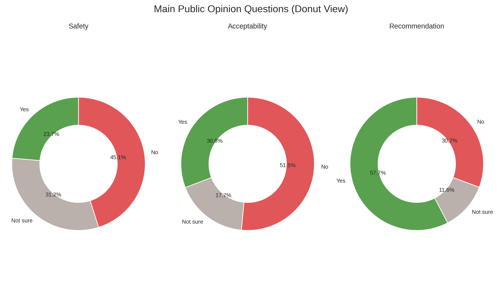
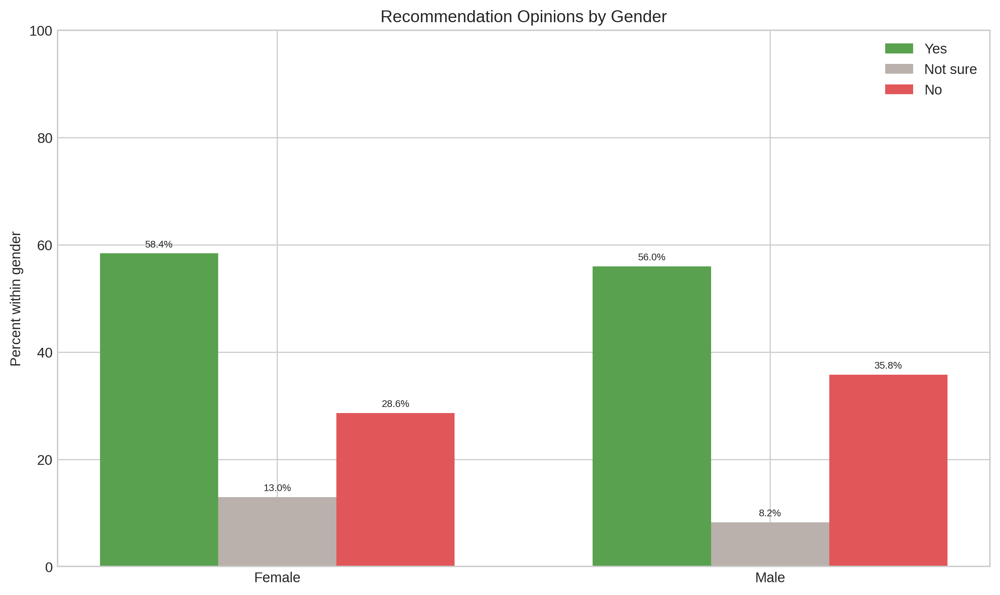
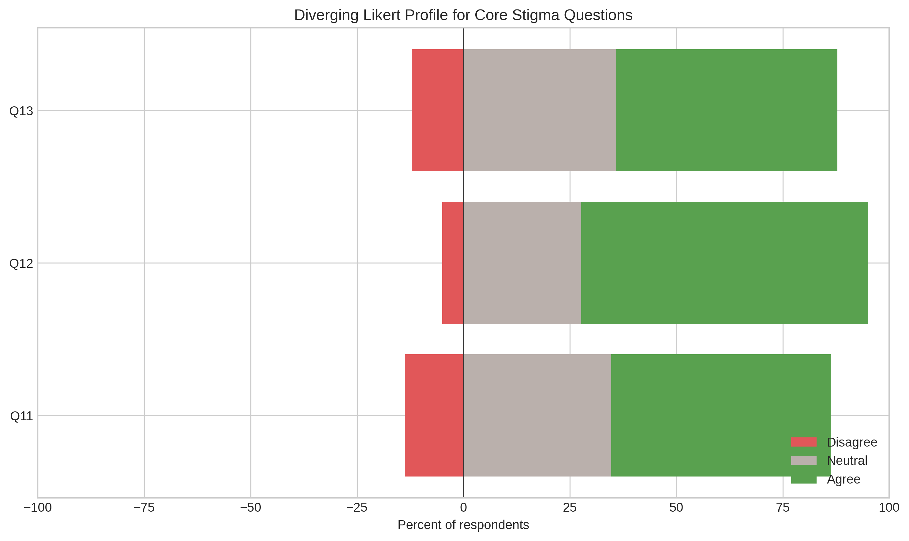
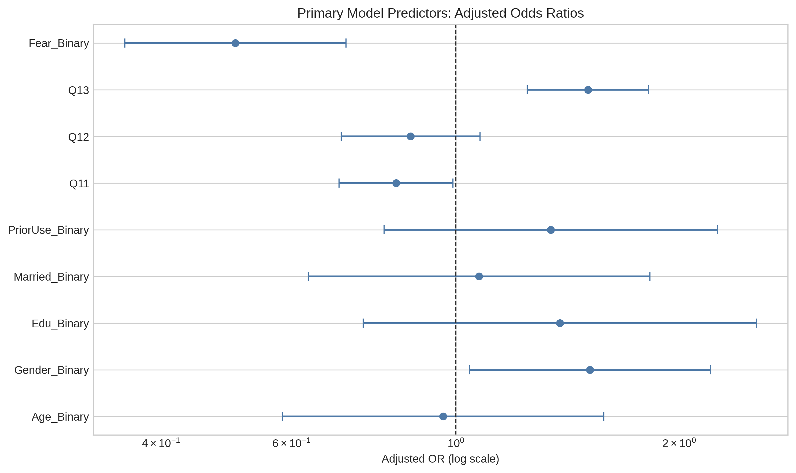
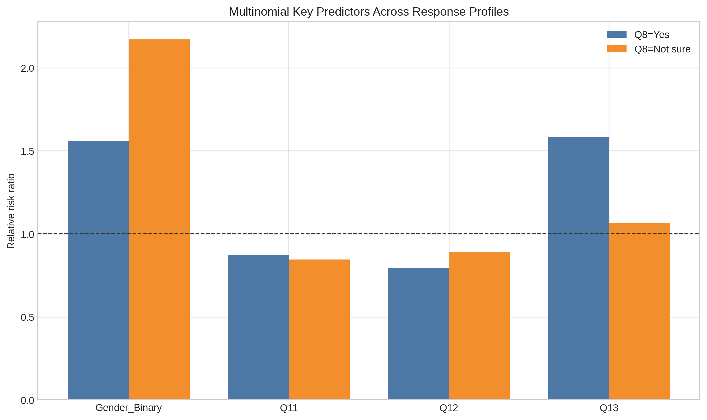
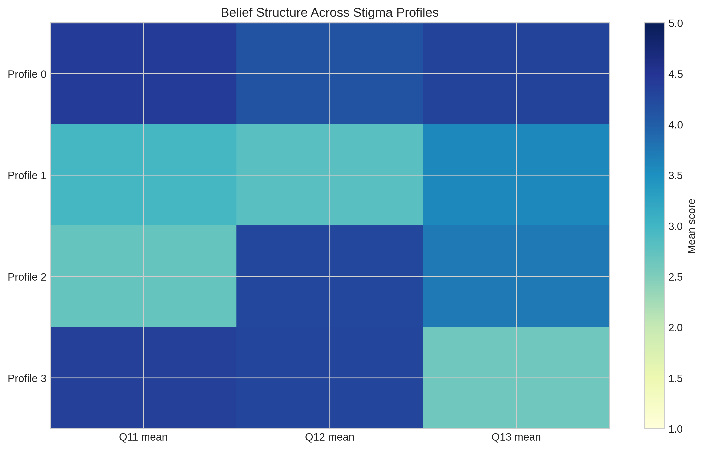

Psychiatric medication acceptance in Iraq remains a public health challenge because mental health need is high while treatment hesitation persists. This study examined psychiatric medication use and public acceptance in Iraq using an original cross-sectional survey and literature review. We analyzed responses from 877 participants. The analysis used descriptive statistics, hierarchical logistic regression, multinomial logistic regression, and exploratory Users vs Non-Users and stigma-phenotype analyses.
The sample was mostly female (about 72%), aged 18–25 years (about 75%), and university educated (about 79%). Recommendation willingness was 57.65%, with 11.62% not sure and 30.72% unwilling. Safety and acceptability were lower: only 23.65% viewed psychiatric medication as safe and 30.80% as acceptable, while unsafe and unacceptable responses were 45.12% and 51.49%, respectively. In the primary hierarchical model (complete-case n=647), recommendation was positively associated with female gender (adjusted OR 1.516) and belief that modern medications are safer than older ones (Q13: adjusted OR 1.507). Recommendation was negatively associated with fear (adjusted OR 0.504) and belief that doctors prescribe more than necessary (Q11: adjusted OR 0.830). In multinomial analysis (n=837), dependence concern (Q12) was associated with an RRR below 1 for “Yes” vs “No” recommendation (RRR 0.794). In the Users vs Non-Users analysis, users showed more favorable beliefs than non-users, especially on modern medication safety.
These findings indicate ambivalent public attitudes rather than uniform rejection. The main barriers are fear, mistrust, and dependence concerns, more than demographics. Compared with Iraqi and regional literature, the results suggest a persistent trust-and-literacy gap that affects treatment uptake. Policy and practice should prioritize pharmacist-led counseling, integrated primary mental health care, and anti-stigma communication to improve medication acceptance and reduce Iraq’s treatment gap.
Iraq’s mental health burden developed under repeated war, displacement, sanctions, and political instability. This history still shapes how people understand psychiatric care today. Evidence from Iraqi and regional reporting shows that exposure to conflict, bereavement, and social disruption increased anxiety, depression, and trauma-related conditions in both urban and displaced populations (Saied et al., 2023; Younis & Khunda, 2020).
At the same time, service capacity did not expand at the same pace as need. Iraqi psychiatry moved through periods of growth and then major workforce loss, especially after conflict-related migration waves, which left a long gap between population demand and specialist availability (Younis & Khunda, 2020; Sadik et al., 2010).
Current system-level indicators support this gap. National commentary describes a continuing shortage of psychiatrists, limited specialized facilities, and weak access in many areas outside major centers (Saied et al., 2023). Earlier Iraqi public-health work also documented a high burden of common mental disorders and a very low proportion of people with mental disorders receiving formal treatment (Sadik et al., 2010). Evidence from post-conflict care literature further shows that service use is shaped not only by availability, but also by fear of labeling, social judgment, and delayed help-seeking even when symptoms are significant (Burnam et al., 2009).
These structural and social conditions make psychiatric medication use a public-health issue, not only a clinical issue. When access to specialist follow-up is limited, decisions about whether psychiatric medicines are acceptable, safe, or socially risky often move into family and community spaces. In Iraq, those decisions are influenced by collective memory of conflict, concerns about dependence, and distrust of mental health services, while public education and mental health literacy remain uneven across groups (Saied et al., 2023; Sadik et al., 2010).
Iraq faces a double challenge. The first challenge is a treatment-capacity gap, with limited workforce and service coverage relative to the burden of mental disorders. The second challenge is a public-acceptance gap, where stigma and negative social beliefs can reduce care-seeking, delay treatment initiation, and weaken long-term medication use. Iraqi evidence indicates that many people recognize biological and psychosocial causes of mental illness, yet still hold restrictive social attitudes about people living with mental disorders (Sadik et al., 2010). This pattern means awareness alone does not automatically produce acceptance.
The available literature gives strong signals on stigma and service barriers, but it does not provide a current, integrated Iraqi cross-sectional picture focused directly on psychiatric medication acceptance in the general public. The present study addresses this local evidence gap by using a dedicated survey framework that links demographic factors, prior medication exposure, core beliefs about psychiatric medicines, and willingness to recommend treatment.
This study aims to measure psychiatric medication acceptance in Iraq and identify factors associated with willingness to recommend psychiatric medication when needed.
The study asks four linked questions. First, what is the distribution of public responses on core acceptance outcomes, including perceived safety, acceptability, recommendation willingness, and social concern? Second, after adjustment for demographic characteristics and prior psychiatric medication use, which beliefs independently predict recommendation willingness? Third, when hesitation is preserved as a separate response category, how do predictors differ across no, yes, and not sure recommendation responses? Fourth, do people with personal experience of psychiatric medication differ from non-users in key belief items related to prescribing trust, dependence concerns, and perceptions of medication progress?
This study has direct value for pharmacy practice in Iraq. Pharmacists are often the most accessible health professionals in daily care pathways, especially when specialist psychiatric follow-up is delayed. Clear evidence on which beliefs are associated with acceptance can help pharmacists provide targeted counseling, address dependence fears, and improve communication with patients and families.
The study also supports clinicians, educators, and health planners. For clinical teams, it clarifies where social perceptions may interfere with evidence-based treatment. For pharmacy and medical education, it provides Iraq-specific data that can strengthen teaching on stigma-sensitive counseling and psychopharmacology communication. For policy and service planning, it offers current local evidence that can support anti-stigma messaging, community engagement, and integration of mental health support in primary-care and public-health programs.
Evidence across Arab and international settings shows that stigma remains a major barrier to mental health care, but its expression varies by culture, service structure, and public literacy. In Arab populations, stigma does not operate only as individual prejudice. It is reinforced by family reputation concerns, social exclusion risks, and public narratives that connect mental illness with danger, moral weakness, or shame (Zolezzi et al., 2018; Booth et al., 2024). This multi-layered pattern helps explain why people may verbally support treatment in principle while still discouraging disclosure or formal care in practice.
Comparative evidence also shows that stigma influences both treatment timing and treatment pathway. Reviews on help-seeking report that public stigma, self-stigma, and institutional stigma can independently reduce formal service use, with delayed care commonly observed in groups exposed to prolonged conflict stress (Rasheed et al., 2026). Although military populations differ from civilian Iraqi populations, the mechanism is relevant to Iraq because conflict exposure and social labeling pressures are shared contextual factors.
Iraqi university evidence adds local detail to this pattern. Among Baghdad students, stigma levels were not random; they were associated with psychosocial conditions such as psychological well-being and social support, suggesting that stigma reduction requires both educational and psychosocial interventions rather than awareness messages alone (Hussein Alwan et al., 2025). This finding aligns with broader conservative-community literature showing that stigma is sustained by social norms and can also influence health workers’ attitudes, which then affects patient trust and continuity of care (Booth et al., 2024).
Regional and international trends indicate gradual improvement in acceptance of psychiatric professionals and treatment in some settings, yet medication-specific hesitation often remains higher than psychotherapy acceptance (Angermeyer et al., 2017). For Iraq, this contrast matters because medication is frequently the first scalable intervention in a constrained service system. If medication acceptance lags behind service expansion, the practical benefit of system investment will remain limited.
Medication acceptance is strongly linked to how people cognitively represent necessity, harm, dependence risk, and long-term control. The Beliefs about Medicines framework shows that adherence behavior is shaped by a balance between perceived need and perceived harm, not by knowledge level alone (Horne et al., 1999). This model remains useful for psychiatric medications because concern-driven non-use can occur even when people acknowledge treatment effectiveness.
Population data outside Iraq show that favorable attitudes toward psychiatric medication can increase over time, but risk perceptions may remain stable. In the United States, willingness to use psychiatric medication rose across survey waves, while concern about medication risks did not decline at the same rate (Mojtabai, 2009). Although this evidence comes from an earlier period and a different health system, the split between rising acceptance and persistent risk concern remains useful for Iraqi interpretation, where awareness can improve faster than trust in long-term medication safety.
Gulf-region literacy evidence shows that low or uneven mental health literacy coexists with persistent negative attitudes and stigma, including among some health-related groups (Elyamani et al., 2021). Iraqi refugee evidence supports this point by showing that even in highly trauma-exposed populations, recognition of formal psychiatric labels can remain low while selective trust in specific forms of help remains high (Slewa-Younan et al., 2014). Taken together, these findings suggest that communication approaches framed around understandable explanations of benefit, safety monitoring, and expected treatment course may be more acceptable than label-centered messaging alone.
Adherence evidence consistently shows that non-adherence is multi-determined and cannot be explained by one variable. Systematic synthesis identifies social support, socioeconomic position, depression burden, treatment costs, and health-system barriers as recurrent determinants, while some demographic effects vary by context and measurement method (Gast & Mathes, 2019). This indicates that adherence strategies in Iraq should combine clinical counseling with structural supports rather than relying on patient motivation alone.
Psychiatric-specific evidence highlights a strong relationship between stigma processes and medication behavior. In mental health settings, internalized stigma is associated with poorer adherence, higher relapse pressure, and reduced social functioning (Abdisa et al., 2020). Intervention reviews in schizophrenia show that information-only psychoeducation often has limited effect, whereas approaches that include motivational, behavioral, and community-support components show better adherence outcomes (Zygmunt et al., 2002).
Family and caregiver context adds another layer that is highly relevant to Iraqi social structure. Systematic review evidence in child and adolescent psychiatry shows that parental beliefs, family functioning, and caregiver mental health influence adherence trajectories (Kalaman et al., 2023). In Iraq, where family decision-making remains central in treatment choices, this supports a practice model in which counseling targets both patient and family belief systems.
Recent Iraqi prescribing evidence shows a meaningful gap between guideline principles and inpatient practice in high-acuity psychiatric care. Data from Baghdad report substantial antipsychotic polypharmacy and a notable proportion of high-dose prescribing, with specific prescribing patterns associated with elevated high-dose exposure (Nassr & Raghad F., 2026). This matters for public acceptance because visible adverse effects and complex regimens can strengthen community fears about psychiatric medication safety.
Community and student-level Iraqi evidence reflects parallel concerns. Research in Basra medical-group students reports measurable psychotropic drug use patterns alongside anxiety and depression burden, suggesting that even health-educated populations may face unresolved medication and mental health challenges (Kadhim et al., 2024). At the care-seeking level, Iraqi psychiatric-clinic evidence indicates frequent prior or concurrent use of faith-healing pathways, often before psychiatric consultation, which can delay formal treatment and fragment continuity of care (Younis et al., 2020).
Regional systems research supports service integration as a practical direction. Reviews from the Middle East and North Africa describe chronic workforce imbalance, urban-rural disparity, funding constraints, and stigma-linked access barriers, despite policy development and educational advances (Okasha et al., 2025). In low- and middle-income settings, integration of mental health services into primary care shows benefit for access and outcomes, although implementation quality and local adaptation remain decisive (Cubillos et al., 2021). For Iraq, this suggests that medication acceptance should be addressed as part of integrated primary-care mental health strategy, not as a stand-alone communication issue.
This study used an original cross-sectional survey design to examine psychiatric medication use and public acceptance in Iraq. The analytic dataset included 877 respondent records after questionnaire cleaning and standardization, as documented in the study’s unified analysis outputs and preprocessing workflow. The design was observational and non-interventional, and all analyses were conducted on de-identified survey records. The available study files did not report a defined study location or a clearly dated data-collection period.
The study analyzed all available respondent records retained after preprocessing of the source questionnaire file. Preprocessing removed the questionnaire label row, normalized text encoding and spacing, mapped Arabic response options to numeric categories, and checked unmapped values before analysis. The cleaned dataset contained 877 participants and represented the achieved analytic sample for descriptive analyses. For inferential models, we applied complete-case handling within each model-specific variable set, so analytic sample size differed by model according to missingness in required fields. The available source documents did not include explicit participant eligibility criteria or recruitment methods. Therefore, this section reports the achieved analytic sample rather than a protocol-level enrollment flow.
The survey instrument included 29 variables covering demographics, public attitudes toward psychiatric medication, medication beliefs, social concern, and prior personal use. Demographic fields captured age group, gender, educational level, and marital status. Core public-acceptance items measured perceived safety, acceptability of psychiatric medication in comparison with treatment for chronic medical conditions, willingness to recommend psychiatric medication, and concern about interacting with a person using psychiatric medication. Belief items included perceptions of overprescribing, dependence risk, and whether modern psychiatric medicines are safer than older options.
The instrument also included an extended block of personal medication-belief items. In the cleaned data, this extended block showed substantial missingness and reflected a subgroup module, so the primary inferential models focused on the core variables that were broadly available across the full sample.
The primary outcome for the main binary logistic models was recommendation willingness, coded from the recommendation item as yes versus no. In the multinomial model, the same outcome preserved three response categories: no, yes, and not sure.
The main predictor set included binary demographic indicators and key belief variables. Age was recoded as 18 to 25 years versus older groups. Education was recoded as university or postgraduate versus lower educational levels. Marital status was recoded as married or previously married versus single. Gender was recoded as female versus male. Prior psychiatric medication use was coded as yes versus no. A concern indicator was coded from the social-concern item as yes versus no. Belief items on overprescribing, dependence, and modern-versus-older medication safety were modeled as ordinal Likert predictors.
To avoid conceptual overlap with the recommendation outcome, two proximal items, perceived safety and disease-model acceptability, were excluded from the primary hierarchical model and tested separately in a sensitivity model.
Data management followed a predefined cleaning pipeline. First, the source spreadsheet label row was removed, and all text fields were normalized to handle spacing and encoding inconsistencies. Second, Arabic response categories were mapped to numeric codes using fixed dictionaries for demographics, Likert responses, yes or no items, and yes or no or not sure items. Third, all mapped fields were converted to numeric types where possible, and unmapped residual text values were checked.
Missingness was quantified per variable. Core variables used in the main models had low missingness, while subgroup medication-belief items had high missingness. Therefore, each inferential model used complete-case records for its own covariate set rather than global listwise deletion across all questionnaire items.
The analysis sequence followed the project’s documented analysis workflow used to generate the unified survey results report. We first estimated hierarchical logistic regression in three blocks for recommendation willingness, progressing from demographic factors to prior medication use and then to belief variables and concern indicator. The complete-case sample for this primary hierarchical model set was 647 respondents. We reported adjusted odds ratios with 95% confidence intervals, model likelihood-ratio p-values, and McFadden pseudo R-squared values.
Second, we estimated a sensitivity logistic model that added perceived safety and acceptability items to test robustness while acknowledging their conceptual proximity to the recommendation outcome. The sensitivity complete-case sample was 406 respondents.
Third, we estimated multinomial logistic regression to preserve the no, yes, and not sure structure of recommendation responses and reported relative risk ratios with 95% confidence intervals. The multinomial complete-case sample was 837 respondents.
Fourth, we tested the contact hypothesis as Users vs Non-Users by comparing core belief items with Mann-Whitney U tests and Cliff’s delta effect sizes, with supplementary chi-square and Cramer’s V statistics for association structure.
Fifth, we conducted exploratory stigma-phenotype profiling using k-means clustering on standardized core belief items, selected cluster number by silhouette score, and reported cluster means and sizes as exploratory findings.
The analysis used de-identified survey data and reported aggregate findings only. No personal identifiers were used in the analytic outputs. The available dataset was handled as anonymized observational data for academic research use. Formal ethics-approval metadata and explicit participant-consent documentation were not included in the available study files. Despite this documentation gap, the analysis followed ethical principles for anonymized secondary-data use and aggregate-only reporting.
Because the design is cross-sectional, associations should not be interpreted as causal effects. Complete-case modeling can reduce sample size for specific analyses and may introduce selection effects if missingness is not random. The achieved sample was dominated by younger and university-educated respondents, which may limit generalizability to older or less-educated Iraqi populations. Some instrument blocks had substantial missingness, so primary inference relied on the most complete and policy-relevant core variables.
The final survey dataset included 877 respondents. Demographic percentages were calculated from valid responses for each variable, not from the full sample in all cases (gender n=870, age n=873, educational level n=873, marital status n=872). Gender distribution was 71.95% female (n=626) and 28.05% male (n=244). Age distribution was concentrated in younger participants, with 74.57% aged 18–25 years (n=651), 17.53% aged 26–35 years (n=153), 5.04% aged 36–45 years (n=44), 2.75% aged 46–60 years (n=24), and 0.11% older than 60 years (n=1). Educational level was primarily university or postgraduate, with 78.92% university (n=689) and 13.52% postgraduate (n=118), while high school represented 6.99% (n=61) and primary represented 0.57% (n=5). Marital status was 78.44% single (n=684), 20.99% married (n=183), 0.34% divorced (n=3), and 0.23% widowed (n=2).
Across core belief items, agreement levels were high for two statements and moderate for one statement. For Q11, 51.55% agreed, 34.67% were neutral, and 13.78% disagreed. For Q12, 67.40% agreed, 27.65% were neutral, and 4.95% disagreed. For Q13, 51.95% agreed, 35.86% were neutral, and 12.18% disagreed. The main question structure is shown in figures/27donutmainquestions.png. The gender-stratified recommendation pattern is shown in figures/31genderrecommendationbreakdown.png. The diverging Likert distribution for Q11 and Q13 is shown in figures/19likertdivergingq11q13.png.



The primary attitude outcomes showed mixed acceptance patterns. For safety perception, 23.65% answered yes, 31.23% answered not sure, and 45.12% answered no. For acceptability, 30.80% answered yes, 17.70% answered not sure, and 51.49% answered no. For recommendation willingness, 57.65% answered yes, 11.62% answered not sure, and 30.72% answered no. For social concerns, 37.77% answered yes, 13.09% answered not sure, and 49.14% answered no.
Bivariate correlations among core variables were as follows: Q11 with Q12, r=0.269; Q13 with Q11, r=-0.066; Q13 with Q12, r=-0.038; recommendation with Q11, r=-0.086; recommendation with Q12, r=-0.087; recommendation with Q13, r=0.077; acceptance with recommendation, r=0.232; and concern with recommendation, r=-0.042.
The primary hierarchical logistic regression used a binary recommendation outcome (Q8 yes vs no) with complete-case n=647. Model fit improved across blocks, with McFadden pseudo R² increasing from 0.0040 in Block 1 to 0.0116 in Block 2 and 0.0686 in Block 3. The Block 1 likelihood ratio p-value was 0.5037, Block 2 p-value was 0.0847, and Block 3 p-value was <0.0001.
In the final primary block, gender, Q11, Q13, and fear were statistically significant predictors. Gender had adjusted OR 1.516 (95% CI 1.043 to 2.205, p=0.0294). Q11 had adjusted OR 0.830 (95% CI 0.696 to 0.991, p=0.0396). Q13 had adjusted OR 1.507 (95% CI 1.248 to 1.820, p<0.0001). Fear had adjusted OR 0.504 (95% CI 0.358 to 0.711, p<0.0001). Age, educational level, marital status, prior use, and Q12 were not statistically significant in this final block. The adjusted effect profile is visualized in figures/03primaryadjustedorforest.png.

A separate sensitivity model that added Q6 and Q7 used complete-case n=406 and produced McFadden pseudo R² of 0.2440 (fit type: mle). This model was reported as a sensitivity analysis because Q6 and Q7 are proximal to the recommendation outcome.
Multinomial logistic regression preserved the three-category recommendation structure with complete-case n=837 and model log-likelihood -748.910 (fit type: mle). The outcome categories were coded as No (reference), Yes, and Not sure, corresponding to Q8=0, Q8=1, and Q8=2.
For the first non-reference equation (Q8=1 Yes vs reference No), gender was positively associated with response likelihood (RRR 1.558, 95% CI 1.097 to 2.214, p=0.0133), Q12 was inversely associated (RRR 0.794, 95% CI 0.651 to 0.970, p=0.0239), and Q13 was positively associated (RRR 1.585, 95% CI 1.328 to 1.892, p<0.0001). Other predictors in this equation were not statistically significant.
For the second non-reference equation (Q8=2 Not sure vs reference No), gender remained statistically significant (RRR 2.171, 95% CI 1.211 to 3.894, p=0.0093), while age, education, marital status, prior use, Q11, Q12, and Q13 were not statistically significant. The comparative predictor pattern is displayed in figures/08multinomialkeypredictorcomparison.png.

The contact analysis compared Users vs Non-Users using prior use status (Users n=127, Non-Users n=716). Mann-Whitney U tests were statistically significant for Q11, Q12, and Q13, while chi-square tests were statistically significant for Q12 and Q13 but not for Q11.
For Q11, the Users median was 3.00 and the Non-Users median was 4.00, with Mann-Whitney U p=0.0428, Cliff’s delta -0.108, chi-square p=0.1170, Cramer’s V=0.094, and N=843. For Q12, both medians were 4.00, with Mann-Whitney U p=0.0317, Cliff’s delta -0.112, chi-square p=0.0428, Cramer’s V=0.108, and N=840. For Q13, the Users median was 4.00 and the Non-Users median was 3.00, with Mann-Whitney U p=0.0002, Cliff’s delta 0.198, chi-square p=0.0027, Cramer’s V=0.139, and N=842.
Exploratory k-means clustering on standardized Q11–Q13 evaluated k=2, k=3, and k=4. Silhouette scores were 0.274 for k=2, 0.272 for k=3, and 0.303 for k=4, so k=4 was selected by maximum silhouette criterion.
The four profiles had the following mean structures. Profile 0 (n=183) showed Q11 mean 4.404, Q12 mean 4.115, and Q13 mean 4.311. Profile 1 (n=230) showed Q11 mean 2.961, Q12 mean 2.804, and Q13 mean 3.578. Profile 2 (n=232) showed Q11 mean 2.694, Q12 mean 4.250, and Q13 mean 3.720. Profile 3 (n=223) showed Q11 mean 4.359, Q12 mean 4.291, and Q13 mean 2.610. Profile-level mean contrasts are shown in figures/14profilemeans_heatmap.png.

The survey included 877 participants and showed a sample pattern with higher female representation and concentration in younger, university-educated, and single respondents based on variable-specific valid denominators. In descriptive outcomes, recommendation willingness had the highest yes proportion (57.65%), while safety and acceptability showed higher no proportions than yes proportions. In the primary hierarchical logistic model (n=647), the strongest statistically supported predictors in the final block were gender, Q11, Q13, and fear. In the multinomial model (n=837), gender remained significant in both non-reference equations, while Q13 and Q12 were significant in one non-reference equation only. In Users vs Non-Users analyses, Mann-Whitney tests were significant for Q11, Q12, and Q13, and chi-square tests were significant for Q12 and Q13 only. Exploratory phenotype analysis identified a four-profile solution with the highest silhouette score among tested cluster counts.
This cross-sectional survey shows a mixed public position toward psychiatric medication in Iraq rather than uniform rejection or uniform support. Recommendation willingness was 57.65%, while 11.62% were not sure and 30.72% were against recommendation. Acceptability was lower: 30.80% considered psychiatric medication acceptable, 17.70% were not sure, and 51.49% considered it unacceptable. Safety perception was similarly low: 23.65% considered medication safe, 31.23% were not sure, and 45.12% considered it unsafe. This pattern suggests that many respondents accept medication in selected situations but still carry safety concerns and social hesitation.
The primary regression results clarify which beliefs matter most in this ambivalence. In the hierarchical logistic model, female gender increased the odds of recommending medication (adjusted OR 1.516, p=0.0294). Agreement that modern psychiatric medicines are safer than older ones (Q13) showed a strong positive association (adjusted OR 1.507, p<0.0001). By contrast, fear reduced recommendation odds (adjusted OR 0.504, p<0.0001), and stronger belief that doctors overprescribe (Q11) also reduced recommendation (adjusted OR 0.830, p=0.0396). These findings show that recommendation behavior in Iraq is shaped more by trust and safety perception than by basic demographics.
The multinomial model adds useful detail for hesitant respondents. For recommendation “Yes” vs “No” (reference category), Q13 remained a strong positive predictor (RRR 1.585, p<0.0001), while dependence concerns (Q12) were associated with an RRR below 1 for “Yes” vs “No” (RRR 0.794, p=0.0239). For the “Not sure” category, gender remained significant (RRR 2.171, p=0.0093), but most attitudinal predictors were weaker. This indicates that uncertainty is not only a neutral midpoint; it reflects unresolved risk beliefs that require targeted communication.
The Users vs Non-Users analysis supports a contact effect. Compared with non-users, users reported lower overprescribing concerns (Q11 median 3 vs 4, p=0.0428) and lower dependence concern intensity (Q12 p=0.0317), and they were more likely to agree that modern medications are safer (Q13 median 4 vs 3, p=0.0002). Effect sizes were small overall, with the largest difference on Q13 (Cliff’s delta 0.198, a small-to-moderate effect showing more positive safety beliefs among users). In practical terms, direct or family-level exposure to psychiatric medication appears to improve trust, but it does not fully remove stigma.
The present survey aligns with earlier Iraqi evidence that public understanding and stigma can coexist. Sadik et al. (2010) reported that many Iraqis accepted biomedical causes of mental illness while still expressing strong social distance and blame. Our findings show a comparable duality: many respondents would recommend medication, yet large proportions still consider it unsafe or socially problematic. Evidence from Baghdad university students also reports persistent stigma despite high educational exposure, which is consistent with the current sample profile where high education did not independently remove negative medication beliefs (Hussein Alwan et al., 2025).
Regional literature helps explain why concern about dependence and overprescribing remained strong in our models. Arab mental health literacy studies report that misconceptions about psychiatric treatment, including fears of addiction and social harm, remain common even among healthcare trainees (Elyamani et al., 2021). Our Q12 distribution, where 67.40% agreed that most psychiatric medications cause dependence, matches this regional pattern. At the same time, the positive effect of Q13 suggests that confidence in newer medications can partially offset this concern when communication is clear.
The findings also fit Iraqi service-use realities. In Baghdad clinical settings, many patients still visit faith healers before or alongside psychiatric care, often due to accessibility, cultural beliefs, and treatment mistrust (Younis et al., 2020). This social pathway helps interpret why recommendation willingness in our sample was higher than perceived safety and acceptability. People may approve treatment in principle but continue to delay formal care when risk perceptions and cultural narratives remain unresolved.
Our results are also compatible with broader adherence evidence. Systematic reviews show that adherence is strongly affected by social support, stigma, and perceived treatment burden rather than diagnosis alone (Gast & Mathes, 2019; Abdisa et al., 2020). The current survey did not measure longitudinal adherence, but the strong effects of fear and dependence beliefs indicate that these same mechanisms are active at the acceptance stage in Iraq. In this sense, acceptance barriers and adherence barriers likely sit on the same pathway.
For Iraqi pharmacy practice, the data show that counseling should prioritize three messages: realistic safety information on modern psychiatric medications, clear distinction between therapeutic dependence and substance misuse, and transparent explanation of prescribing decisions. The regression results indicate that these topics are directly linked to recommendation behavior, so they should become standard counseling content in both community pharmacies and hospital settings.
Pharmacists can also use contact-informed communication. Because users showed more favorable attitudes on key items, pharmacists can normalize treatment by integrating lived-experience narratives and family-focused counseling during dispensing and follow-up. This approach is feasible in Iraq, where pharmacists are often more accessible than psychiatrists. It may reduce fear and uncertainty before stigma leads to treatment delay.
At public health level, the results support integrating anti-stigma and medication-literacy components into primary care mental health services. Regional evidence shows that integrated primary care models improve outcomes in low-resource settings when they combine clinical care with structured education and follow-up (Cubillos et al., 2021). For Iraq, this means linking physician diagnosis, pharmacist counseling, and brief public education in one pathway rather than treating these as separate activities.
The study has several strengths. It provides one of the larger recent Iraqi datasets on psychiatric medication acceptance (N=877), preserves response structure through multinomial modeling, and complements the primary model with contact-group and exploratory phenotype analyses. This analytic sequence gives more policy-relevant information than single binary comparisons.
The study also has limits. First, the cross-sectional design does not establish causality, so the reported associations should not be interpreted as directional effects over time. Second, complete-case modeling reduced analytic sample size in some models, which may limit generalizability. Third, the sample was mostly female and highly university-educated, so findings may not fully represent older, rural, or less educated Iraqi populations. Fourth, self-reported attitudes are vulnerable to social desirability bias and may either understate or overstate stigma.
Future Iraqi research should test whether targeted pharmacist-led counseling can reduce fear and dependence beliefs and then improve actual treatment initiation and adherence. Longitudinal follow-up is needed to connect acceptance attitudes with refill behavior, persistence, and relapse outcomes. Multisite sampling across governorates should also examine urban-rural differences and service-access disparities, especially in areas with lower specialist density.
The exploratory stigma phenotypes identified in this study also need confirmatory work. Subsequent studies should validate these profiles with larger and more demographically balanced samples, then evaluate whether each profile responds differently to educational messages, clinician communication style, and family involvement. This would allow Iraq to move from general anti-stigma messaging toward stratified interventions that match the dominant belief pattern in each subgroup.
The Iraqi Ministry of Health should adopt a national psychiatric medication acceptance strategy that links stigma reduction with medication safety communication. The survey shows that fear and low confidence in modern medication safety are central barriers. Policy messaging should therefore move beyond general awareness and directly address these beliefs. Standardized language should correct dependence misconceptions, explain modern medication safety, and acknowledge local cultural concerns. As an initial step, the Ministry can assign a joint technical group from the Mental Health Directorate, Pharmacy Directorate, and Primary Care Directorate. This group should produce one national counseling package and one public communication package for pilot implementation in selected governorates within 12 months.
National guidance should also formalize integrated mental health care in primary care settings, with defined roles for psychiatrists, primary care physicians, and pharmacists. Regional evidence supports integrated models for improving access and outcomes in resource-limited systems (Cubillos et al., 2021; Okasha et al., 2025). For Iraq, this model can reduce specialist bottlenecks and create earlier treatment contact points.
Policy should also support public campaigns that include religious and community leaders to address care delays linked to traditional help-seeking pathways (Younis et al., 2020). The aim is not to dismiss cultural practices, but to align them with timely referral to formal mental health services.
Pharmacists should implement structured counseling at first dispensing and refill visits for psychiatric medications. Counseling should cover expected benefits, common adverse effects, misconceptions about inevitable addiction, and signs that require physician follow-up. The present survey findings justify this focus because beliefs on overprescribing, dependence, and safety were statistically linked to recommendation behavior.
Physicians should use brief shared-decision communication in outpatient and inpatient settings, especially when introducing or changing treatment. Clear explanation of why a specific medicine is selected can reduce overprescribing suspicion and improve trust. In hospital settings, monthly prescribing audits led by senior psychiatrists and clinical pharmacists should monitor high-dose and polypharmacy patterns. Audit findings should trigger direct prescriber feedback and case-review meetings for outlier patterns, given documented Iraqi concerns about prescribing intensity in inpatient care (Nassr & Wadeea, 2026).
Primary care teams should create a simple referral-feedback loop between clinics and community pharmacies so patients receive consistent messages. Inconsistency across providers can strengthen uncertainty, which remained visible in the multinomial model.
Pharmacy and medical curricula in Iraq should include practical training on stigma-sensitive communication about psychiatric medication. Students should learn how to address dependence concerns, social blame, and family objections in clear Arabic and English clinical language. This recommendation is supported by local and regional evidence showing that stigma remains present even among highly educated groups (Hussein Alwan et al., 2025; Elyamani et al., 2021).
Public education campaigns should prioritize message testing before national rollout. Because the survey identified exploratory belief profiles, one uniform message will likely have limited impact. Campaigns should adapt tone and content to subgroups with high fear, high dependence concern, or high distrust of prescribing.
Future Iraqi studies should evaluate intervention effectiveness rather than only describing attitudes. Priority designs include pragmatic trials of pharmacist-led counseling, integrated primary care psychoeducation, and contact-based anti-stigma messaging. Outcomes should include both belief change and behavioral endpoints such as clinic attendance, initiation of prescribed treatment, refill continuity, and relapse-related hospitalization.
Researchers should also conduct repeated cross-sectional surveys with harmonized measures to monitor trend changes in acceptance, safety perception, and recommendation willingness over time. This will allow policymakers to track whether reforms produce measurable public attitude improvement.
This study adds current Iraqi primary data showing that public acceptance of psychiatric medication is not binary. Many respondents supported recommending treatment, yet large proportions still doubted safety and social acceptability. Key predictors were attitudinal beliefs and fear rather than most demographic variables, which identifies practical targets for intervention.
When interpreted with Iraqi and regional literature, the survey indicates that Iraq faces a trust-and-literacy gap more than a simple awareness gap. People may recognize mental health needs but still hesitate because of dependence concerns, overprescribing beliefs, and stigma shaped by social and cultural context. This pattern is consistent with earlier Iraqi public attitude studies and wider Arab mental health literacy findings.
The evidence also indicates that pharmacists are positioned to close this gap. In a system with limited specialist capacity, pharmacist-led counseling and coordinated primary care communication can translate treatment availability into treatment acceptance.
The evidence from this study supports a clear national direction for Iraq: improve psychiatric medication acceptance by reducing fear, correcting dependence myths, and strengthening trust in modern treatment through integrated, pharmacist-inclusive care. If policy and practice align around these targets, Iraq can reduce treatment delay, improve adherence pathways, and narrow the mental health treatment gap.
Abdisa, Eba, Ginenus Fekadu, Shimelis Girma, et al. “Self-Stigma and Medication Adherence among Patients with Mental Illness Treated at Jimma University Medical Center, Southwest Ethiopia.” International Journal of Mental Health Systems 14, no. 1 (2020): 56. https://doi.org/10.1186/s13033-020-00391-6. Abdul Kareem, Makwan, and Hezha Mahmood. “Adherence to Pharmacological Treatment Among Patients with Schizophrenia: Adherence to Pharmacological Treatment Among Patients with Schizophrenia.” Iraqi National Journal of Medicine 4, no. 1 (2022): 31–42. https://doi.org/10.37319/IQNJM.4.1.4. Abi Hana, Racha, Maguy Arnous, Eva Heim, et al. “Mental Health Stigma at Primary Health Care Centres in Lebanon: Qualitative Study.” International Journal of Mental Health Systems 16, no. 1 (2022): 23. https://doi.org/10.1186/s13033-022-00533-y. Adewuya, Abiodun O., and Roger O. A. Makanjuola. “Lay Beliefs Regarding Causes of Mental Illness in Nigeria: Pattern and Correlates.” Social Psychiatry and Psychiatric Epidemiology 43, no. 4 (2008): 336–41. https://doi.org/10.1007/s00127-007-0305-x. Al-Asadi, Jasim Naeem, and Zainab B. Hussein. “Depression among Infertile Women in Basrah, Iraq: Prevalence and Risk Factors.” Journal of the Chinese Medical Association: JCMA 78, no. 11 (2015): 673–77. https://doi.org/10.1016/j.jcma.2015.07.009. Al-Awadhi, Anwar, Farid Atawneh, M. ZiadY Alalyan, AltafAhmad Shahid, Sulaiman Al-Alkhadhari, and MuhammadAjmal Zahid. “Nurses’ Attitude towards Patients with Mental Illness in a General Hospital in Kuwait.” Saudi Journal of Medicine and Medical Sciences 5, no. 1 (2017): 31. https://doi.org/10.4103/1658-631X.194249. Albaroodi, Khansaa A. Ibrahim. “Pharmacists’ Knowledge Regarding Drug Disposal in Karbala.” Pharmacy 7, no. 2 (2019): 57. https://doi.org/10.3390/pharmacy7020057. Al-Hemiary, Nesif J., Jawad K. Al-Diwan, Albert L. Hasson, and Richard A. Rawson. “Drug and Alcohol Use in Iraq: Findings of the Inaugural Iraqi Community Epidemiological Workgroup.” Substance Use & Misuse 49, no. 13 (2014): 1759–63. https://doi.org/10.3109/10826084.2014.913633. Al-Jawadi, Asma A., and Shatha Abdul-Rhman. “Prevalence of Childhood and Early Adolescence Mental Disorders among Children Attending Primary Health Care Centers in Mosul, Iraq: A Cross-Sectional Study.” BMC Public Health 7, no. 1 (2007): 274. https://doi.org/10.1186/1471-2458-7-274. Almazeedi, Hind, and Mohammad T. Alsuwaidan. “‘Integrating Kuwait’s Mental Health System to End Stigma: A Call to Action.’” Journal of Mental Health 23, no. 1 (2014): 1–3. https://doi.org/10.3109/09638237.2013.775407. Al Omari, Omar, Blessy Prabha Valsaraj, Moawiah Khatatbeh, et al. “Self and Public Stigma towards Mental Illnesses and Its Predictors among University Students in 11 Arabic‐speaking Countries: A Multi‐site Study.” International Journal of Mental Health Nursing 32, no. 6 (2023): 1745–55. https://doi.org/10.1111/inm.13206. Angermeyer, Matthias C., Sandra Van Der Auwera, Mauro G. Carta, and Georg Schomerus. “Public Attitudes towards Psychiatry and Psychiatric Treatment at the Beginning of the 21st Century: A Systematic Review and Meta‐analysis of Population Surveys.” World Psychiatry 16, no. 1 (2017): 50–61. https://doi.org/10.1002/wps.20383. Berge, Erik Eng, Roger Hagen, and Joar Øveraas Halvorsen. “PTSD Relapse in Veterans of Iraq and Afghanistan: A Systematic Review.” Military Psychology 32, no. 4 (2020): 300–312. https://doi.org/10.1080/08995605.2020.1754123. Booth, Wendy A., Mabrouka Abuhmida, and Felix Anyanwu. “Mental Health Stigma: A Conundrum for Healthcare Practitioners in Conservative Communities.” Frontiers in Public Health 12 (May 2024): 1384521. https://doi.org/10.3389/fpubh.2024.1384521. Burnam, M. Audrey, Lisa S. Meredith, Terri Tanielian, and Lisa H. Jaycox. “Mental Health Care For Iraq And Afghanistan War Veterans.” Health Affairs 28, no. 3 (2009): 771–82. https://doi.org/10.1377/hlthaff.28.3.771. Cubillos, Leonardo, Sophia M. Bartels, William C. Torrey, et al. “The Effectiveness and Cost-Effectiveness of Integrating Mental Health Services in Primary Care in Low- and Middle-Income Countries: Systematic Review.” BJPsych Bulletin 45, no. 1 (2021): 40–52. https://doi.org/10.1192/bjb.2020.35. Dikeç, Gül, and Kübra Timarcıoğlu. “Medication Adherence to Psychotropic Medication and Relationship with Psychiatric Symptoms among Syrian Refugees in Turkey: A Pilot Study.” Trauma Care 3, no. 1 (2023): 37–45. https://doi.org/10.3390/traumacare3010005. Elyamani, Rowaida, Sarah Naja, Ayman Al-Dahshan, Hamed Hamoud, Mohammed Iheb Bougmiza, and Noora Alkubaisi. “Mental Health Literacy in Arab States of the Gulf Cooperation Council: A Systematic Review.” PLOS ONE 16, no. 1 (2021): e0245156. https://doi.org/10.1371/journal.pone.0245156. Gast, Alina, and Tim Mathes. “Medication Adherence Influencing Factors—an (Updated) Overview of Systematic Reviews.” Systematic Reviews 8, no. 1 (2019): 112. https://doi.org/10.1186/s13643-019-1014-8. Häge, Alexander, Lisa Weymann, Lucia Bliznak, Viktoria Märker, Konstantin Mechler, and Ralf W. Dittmann. “Non-adherence to Psychotropic Medication Among Adolescents – A Systematic Review of the Literature.” Zeitschrift für Kinder- und Jugendpsychiatrie und Psychotherapie 46, no. 1 (2018): 69–78. https://doi.org/10.1024/1422-4917/a000505. Hamrin, Vanya, Erin M. McCarthy, and Veda Tyson. “Pediatric Psychotropic Medication Initiation and Adherence: A Literature Review Based on Social Exchange Theory.” Journal of Child and Adolescent Psychiatric Nursing 23, no. 3 (2010): 151–72. https://doi.org/10.1111/j.1744-6171.2010.00237.x. Herbert, Sophia M. C., Joni C. Carroll, Kim C. Coley, Stephanie Harriman McGrath, and Melissa Somma McGivney. “A Student Pharmacist Quality Engagement Team to Support Initial Implementation of Comprehensive Medication Management within Independent Community Pharmacies.” Pharmacy 8, no. 3 (2020): 141. https://doi.org/10.3390/pharmacy8030141. Hisle-Gorman, Elizabeth, Apryl Susi, and Gregory H. Gorman. “Mental Health Trends in Military Pediatrics.” Psychiatric Services 70, no. 8 (2019): 657–64. https://doi.org/10.1176/appi.ps.201800101. Hoge, Charles W., Carl A. Castro, Stephen C. Messer, Dennis McGurk, Dave I. Cotting, and Robert L. Koffman. “Combat Duty in Iraq and Afghanistan, Mental Health Problems, and Barriers to Care.” New England Journal of Medicine 351, no. 1 (2004): 13–22. https://doi.org/10.1056/NEJMoa040603. Hoge, Charles W., Christopher G. Ivany, Edward A. Brusher, et al. “Transformation of Mental Health Care for U.S. Soldiers and Families During the Iraq and Afghanistan Wars: Where Science and Politics Intersect.” American Journal of Psychiatry 173, no. 4 (2016): 334–43. https://doi.org/10.1176/appi.ajp.2015.15040553. Horne, Robert, John Weinman, and Maittew Hankins. “The Beliefs about Medicines Questionnaire: The Development and Evaluation of a New Method for Assessing the Cognitive Representation of Medication.” Psychology & Health 14, no. 1 (1999): 1–24. https://doi.org/10.1080/08870449908407311. Hussein Alwan, Iman, Mohammed Fadhil Ali, and Zeyad Tariq Madalla. “Factors Influencing Stigma Toward Mental Illness Among Students at the University of Baghdad.” International Journal of Body, Mind and Culture 12, no. 6 (2025): 161–70. https://doi.org/10.61838/ijbmc.v12i5.945. Ibrahim, Hawkar, Verena Ertl, Claudia Catani, Azad Ali Ismail, and Frank Neuner. “Trauma and Perceived Social Rejection among Yazidi Women and Girls Who Survived Enslavement and Genocide.” BMC Medicine 16, no. 1 (2018): 154. https://doi.org/10.1186/s12916-018-1140-5. Kadhim, Sheima Nadim, Zainab Haroon Ahmed, and Muntadher Luay Abdulsahib. “ANXIETY, DEPRESSION, AND PSYCHOTROPIC DRUGS USAGE BY UNIVERSITY STUDENTS OF MEDICAL GROUP IN BASRA, IRAQ.” Universal Journal of Pharmaceutical Research, ahead of print, May 15, 2024. https://doi.org/10.22270/ujpr.v9i2.1081. Kalaman, Clarisse Roswini, Norhayati Ibrahim, Vinorra Shaker, et al. “Parental Factors Associated with Child or Adolescent Medication Adherence: A Systematic Review.” Healthcare 11, no. 4 (2023): 501. https://doi.org/10.3390/healthcare11040501. Kwan, Yu Heng, Si Dun Weng, Dionne Hui Fang Loh, et al. “Measurement Properties of Existing Patient-Reported Outcome Measures on Medication Adherence: Systematic Review.” Journal of Medical Internet Research 22, no. 10 (2020): e19179. https://doi.org/10.2196/19179. Leucht, S., T. Burkard, J. Henderson, M. Maj, and N. Sartorius. “Physical Illness and Schizophrenia: A Review of the Literature.” Acta Psychiatrica Scandinavica 116, no. 5 (2007): 317–33. https://doi.org/10.1111/j.1600-0447.2007.01095.x. Leucht, Stefan, Andrea Cipriani, Loukia Spineli, et al. “Comparative Efficacy and Tolerability of 15 Antipsychotic Drugs in Schizophrenia: A Multiple-Treatments Meta-Analysis.” The Lancet 382, no. 9896 (2013): 951–62. https://doi.org/10.1016/S0140-6736(13)60733-3. Mohammed, Mrywan Abdulmajeed, and Konul Memmedova. “Prevalence of Mental Health Problems among Iraqi University Students during the COVID-19 Pandemic.” Sustainability 15, no. 3 (2023): 1746. https://doi.org/10.3390/su15031746. Mojtabai, Ramin. “Americans’ Attitudes Toward Psychiatric Medications: 1998–2006.” Psychiatric Services 60, no. 8 (2009): 1015–23. https://doi.org/10.1176/ps.2009.60.8.1015. Nassr, Ola A., and Raghad F. “Prevalence and Predictors of High-Dose Antipsychotic Therapy among Adult Psychiatric Inpatients in Baghdad, Iraq.” South African Journal of Psychiatry 32, no. 0 (2026): a2606. https://doi.org/10.4102/SAJPSYCHIATRY.v32i0.2606. Okasha, Tarek, Nermin M. Shaker, and Dina Aly El-Gabry. “Mental Health Services in Egypt, the Middle East, and North Africa.” International Review of Psychiatry 37, nos. 3–4 (2025): 306–14. https://doi.org/10.1080/09540261.2024.2400143. Ouanes, Sami, Imen Becetti, Suhaila Ghuloum, et al. “Patterns of Prescription of Antipsychotics in Qatar.” PLOS ONE 15, no. 11 (2020): e0241986. https://doi.org/10.1371/journal.pone.0241986. Rasheed, Sana, Eisha Kashif, Rida Arif, et al. “The Impact of Stigma on Health Care-Seeking Behavior in Military Personnel with Mental Health Challenges.” Annals of Medicine and Surgery (2012) 88, no. 1 (2026): 630–36. https://doi.org/10.1097/MS9.0000000000004569. Roder, V. “Integrated Psychological Therapy (IPT) for Schizophrenia: Is It Effective?” Schizophrenia Bulletin 32, no. Supplement 1 (2006): S81–93. https://doi.org/10.1093/schbul/sbl021. Sadik, Sabah, Marie Bradley, Saad Al-Hasoon, and Rachel Jenkins. “Public Perception of Mental Health in Iraq.” International Journal of Mental Health Systems 4, no. 1 (2010): 26. https://doi.org/10.1186/1752-4458-4-26. Saied, AbdulRahman A., Sirwan Khalid Ahmed, Asmaa A. Metwally, and Hani Aiash. “Iraq’s Mental Health Crisis: A Way Forward?” The Lancet 402, no. 10409 (2023): 1235–36. https://doi.org/10.1016/S0140-6736(23)01283-7. Saied, AbdulRahman A., Asmaa A. Metwally, Sirwan Khalid Ahmed, Rukhsar Muhmmad Omar, and Salar Omar Abdulqadir. “National Suicide Prevention Strategy in Iraq.” Asian Journal of Psychiatry 82 (April 2023): 103486. https://doi.org/10.1016/j.ajp.2023.103486. Slewa-Younan, Shameran, Jonathan Mond, Elise Bussion, et al. “Mental Health Literacy of Resettled Iraqi Refugees in Australia: Knowledge about Posttraumatic Stress Disorder and Beliefs about Helpfulness of Interventions.” BMC Psychiatry 14, no. 1 (2014): 320. https://doi.org/10.1186/s12888-014-0320-x. Uribe Guajardo, Maria Gabriela, Shameran Slewa-Younan, Betty Ann Kitchener, Haider Mannan, Yaser Mohammad, and Anthony Francis Jorm. “Improving the Capacity of Community-Based Workers in Australia to Provide Initial Assistance to Iraqi Refugees with Mental Health Problems: An Uncontrolled Evaluation of a Mental Health Literacy Course.” International Journal of Mental Health Systems 12, no. 1 (2018): 2. https://doi.org/10.1186/s13033-018-0180-8. Van, Connie, Daniel Costa, Penny Abbott, Bernadette Mitchell, and Ines Krass. “Community Pharmacist Attitudes towards Collaboration with General Practitioners: Development and Validation of a Measure and a Model.” BMC Health Services Research 12, no. 1 (2012): 320. https://doi.org/10.1186/1472-6963-12-320. Younis, Maha S. “Tears of Ishtar: Women’s Mental Health in Iraq.” The Lancet. Psychiatry 2, no. 2 (2015): 119–21. https://doi.org/10.1016/S2215-0366(14)00061-3. Younis, Maha S., and Deema Khunda. “Maha Sulaiman Younis: A Personal History of Psychiatry in Iraq through War and Conflict.” GLOBAL PSYCHIATRY ARCHIVES 3, no. 2 (2020): 113–18. https://doi.org/10.52095/gpa.2020.1355. Younis, Maha S., Riyadh K. Lafta, and Saba Dhiaa. “Faith Healers Are Taking over the Role of Psychiatrists in Iraq.” Qatar Medical Journal 2019, no. 3 (2020). https://doi.org/10.5339/qmj.2019.13. Younis, Maha Sulaiman, and Riyadh Khudhiar Lafta. “The Plight of Women in Iraq: Gender Disparity, Violence, and Mental Health.” International Journal of Social Psychiatry 67, no. 8 (2021): 977–83. https://doi.org/10.1177/00207640211003602. Zolezzi, Monica, Maha Alamri, Shahd Shaar, and Daniel Rainkie. “Stigma Associated with Mental Illness and Its Treatment in the Arab Culture: A Systematic Review.” International Journal of Social Psychiatry 64, no. 6 (2018): 597–609. https://doi.org/10.1177/0020764018789200. Zygmunt, Annette, Mark Olfson, Carol A. Boyer, and David Mechanic. “Interventions to Improve Medication Adherence in Schizophrenia.” American Journal of Psychiatry 159, no. 10 (2002): 1653–64. https://doi.org/10.1176/appi.ajp.159.10.1653.
This chart is part of the survey analysis for Psychiatric Medication Use and Public Acceptance in Iraq.
Caption: Adjusted odds ratios with 95% confidence intervals for Block 3 predictors.
Quick analysis: 4 predictors are statistically significant at p<0.05, with clear protective and risk-direction effects.
This chart is part of the survey analysis for Psychiatric Medication Use and Public Acceptance in Iraq.
Caption: Side-by-side RRR values for key predictors across Yes and Not sure outcomes.
Quick analysis: Q13 shows a larger relative risk ratio for Yes responses, whereas Q11 and Q12 have relative risk ratios closer to 1.0 in the Not sure equation.
This chart is part of the survey analysis for Psychiatric Medication Use and Public Acceptance in Iraq.
Caption: Heatmap of profile-level means across Q11, Q12, and Q13.
Quick analysis: Profiles show distinct belief combinations, especially around confidence in newer medications (Q13).
This chart is part of the survey analysis for Psychiatric Medication Use and Public Acceptance in Iraq.
Caption: Disagree/Neutral/Agree percentages for Q11, Q12, and Q13.
Quick analysis: Q11 and Q12 lean toward agreement with concern-focused statements, while Q13 shows stronger positive confidence in newer medications.
This chart is part of the survey analysis for Psychiatric Medication Use and Public Acceptance in Iraq.
Caption: Donut infographic view for safety, acceptability, and recommendation responses.
Quick analysis: This compact format gives a quick social-media-style snapshot of the three core public opinion outcomes.
This chart is part of the survey analysis for Psychiatric Medication Use and Public Acceptance in Iraq.
Caption: Within-gender distribution of Yes/Not sure/No responses for recommendation.
Quick analysis: The side-by-side format highlights how recommendation sentiment differs between women and men.